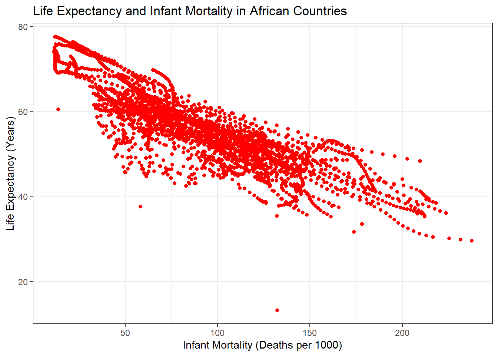
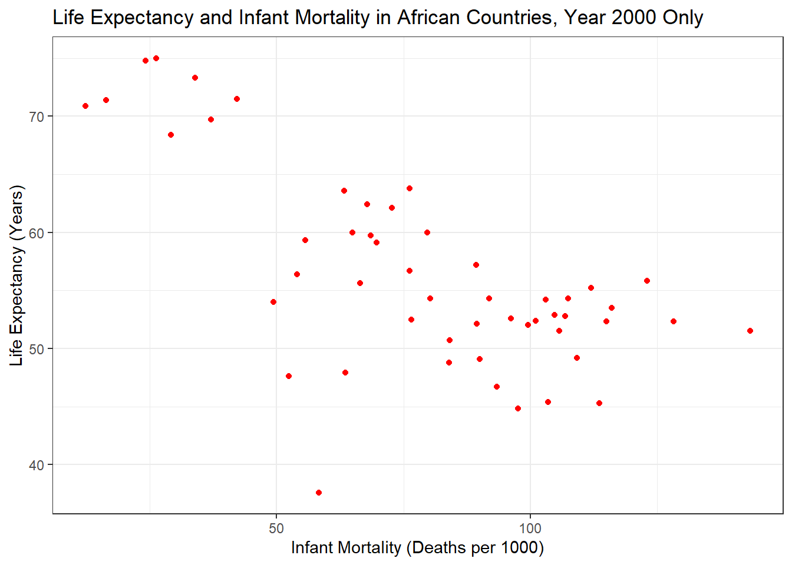
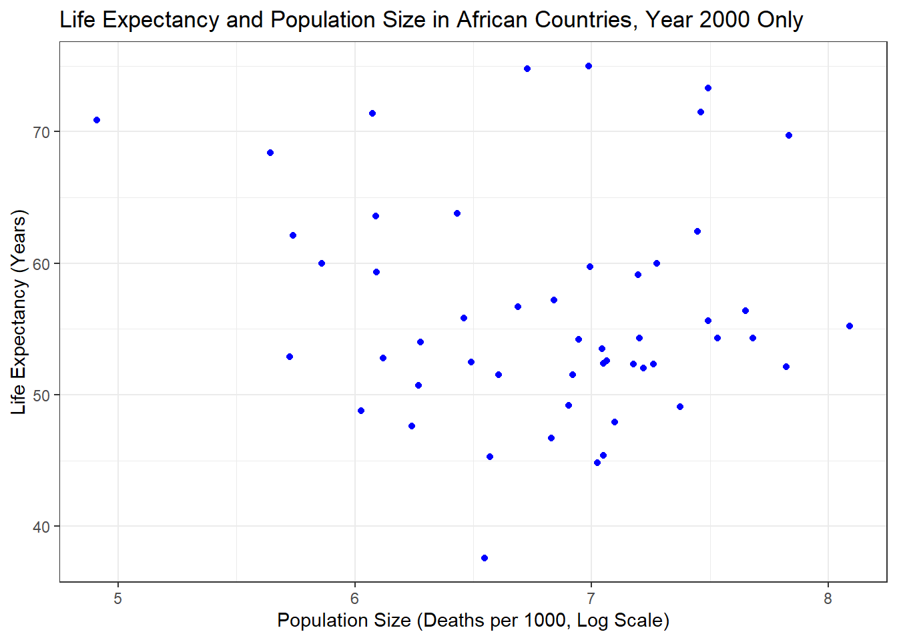

#Commented out after initial install
#install.packages(c("dslabs","ggplot2","tidyverse"))R Coding Exercise
LOADING AND CHECKING DATA
Install packages required for exercise
Load packages
library("dslabs")
library("ggplot2")
library("tidyverse")Look at help file for gapminder data
help(gapminder)starting httpd help server ... doneGet an overview of data structure for gapminder
str(gapminder)'data.frame': 10545 obs. of 9 variables:
$ country : Factor w/ 185 levels "Albania","Algeria",..: 1 2 3 4 5 6 7 8 9 10 ...
$ year : int 1960 1960 1960 1960 1960 1960 1960 1960 1960 1960 ...
$ infant_mortality: num 115.4 148.2 208 NA 59.9 ...
$ life_expectancy : num 62.9 47.5 36 63 65.4 ...
$ fertility : num 6.19 7.65 7.32 4.43 3.11 4.55 4.82 3.45 2.7 5.57 ...
$ population : num 1636054 11124892 5270844 54681 20619075 ...
$ gdp : num NA 1.38e+10 NA NA 1.08e+11 ...
$ continent : Factor w/ 5 levels "Africa","Americas",..: 4 1 1 2 2 3 2 5 4 3 ...
$ region : Factor w/ 22 levels "Australia and New Zealand",..: 19 11 10 2 15 21 2 1 22 21 ...Get a summary of data in gapminder
summary(gapminder) country year infant_mortality life_expectancy
Albania : 57 Min. :1960 Min. : 1.50 Min. :13.20
Algeria : 57 1st Qu.:1974 1st Qu.: 16.00 1st Qu.:57.50
Angola : 57 Median :1988 Median : 41.50 Median :67.54
Antigua and Barbuda: 57 Mean :1988 Mean : 55.31 Mean :64.81
Argentina : 57 3rd Qu.:2002 3rd Qu.: 85.10 3rd Qu.:73.00
Armenia : 57 Max. :2016 Max. :276.90 Max. :83.90
(Other) :10203 NA's :1453
fertility population gdp continent
Min. :0.840 Min. :3.124e+04 Min. :4.040e+07 Africa :2907
1st Qu.:2.200 1st Qu.:1.333e+06 1st Qu.:1.846e+09 Americas:2052
Median :3.750 Median :5.009e+06 Median :7.794e+09 Asia :2679
Mean :4.084 Mean :2.701e+07 Mean :1.480e+11 Europe :2223
3rd Qu.:6.000 3rd Qu.:1.523e+07 3rd Qu.:5.540e+10 Oceania : 684
Max. :9.220 Max. :1.376e+09 Max. :1.174e+13
NA's :187 NA's :185 NA's :2972
region
Western Asia :1026
Eastern Africa : 912
Western Africa : 912
Caribbean : 741
South America : 684
Southern Europe: 684
(Other) :5586 Determine the type of object gapminder is
class(gapminder)[1] "data.frame"PROCESSING DATA
Assign African countries to a new object called africadata
africadata<-gapminder[gapminder$continent == "Africa", ]Run str and summary on africadata to check work
(2907 obs and 9 vars)
str(africadata)'data.frame': 2907 obs. of 9 variables:
$ country : Factor w/ 185 levels "Albania","Algeria",..: 2 3 18 22 26 27 29 31 32 33 ...
$ year : int 1960 1960 1960 1960 1960 1960 1960 1960 1960 1960 ...
$ infant_mortality: num 148 208 187 116 161 ...
$ life_expectancy : num 47.5 36 38.3 50.3 35.2 ...
$ fertility : num 7.65 7.32 6.28 6.62 6.29 6.95 5.65 6.89 5.84 6.25 ...
$ population : num 11124892 5270844 2431620 524029 4829291 ...
$ gdp : num 1.38e+10 NA 6.22e+08 1.24e+08 5.97e+08 ...
$ continent : Factor w/ 5 levels "Africa","Americas",..: 1 1 1 1 1 1 1 1 1 1 ...
$ region : Factor w/ 22 levels "Australia and New Zealand",..: 11 10 20 17 20 5 10 20 10 10 ...summary(africadata) country year infant_mortality life_expectancy
Algeria : 57 Min. :1960 Min. : 11.40 Min. :13.20
Angola : 57 1st Qu.:1974 1st Qu.: 62.20 1st Qu.:48.23
Benin : 57 Median :1988 Median : 93.40 Median :53.98
Botswana : 57 Mean :1988 Mean : 95.12 Mean :54.38
Burkina Faso: 57 3rd Qu.:2002 3rd Qu.:124.70 3rd Qu.:60.10
Burundi : 57 Max. :2016 Max. :237.40 Max. :77.60
(Other) :2565 NA's :226
fertility population gdp continent
Min. :1.500 Min. : 41538 Min. :4.659e+07 Africa :2907
1st Qu.:5.160 1st Qu.: 1605232 1st Qu.:8.373e+08 Americas: 0
Median :6.160 Median : 5570982 Median :2.448e+09 Asia : 0
Mean :5.851 Mean : 12235961 Mean :9.346e+09 Europe : 0
3rd Qu.:6.860 3rd Qu.: 13888152 3rd Qu.:6.552e+09 Oceania : 0
Max. :8.450 Max. :182201962 Max. :1.935e+11
NA's :51 NA's :51 NA's :637
region
Eastern Africa :912
Western Africa :912
Middle Africa :456
Northern Africa :342
Southern Africa :285
Australia and New Zealand: 0
(Other) : 0 Create new object that contains only infant_mortality and life_expectancy
infmort_lifeexp <- africadata[,c("infant_mortality","life_expectancy")]Run str and summary on new infmort_lifeexp object
(2907 obs and 2 vars)
str(infmort_lifeexp)'data.frame': 2907 obs. of 2 variables:
$ infant_mortality: num 148 208 187 116 161 ...
$ life_expectancy : num 47.5 36 38.3 50.3 35.2 ...summary(infmort_lifeexp) infant_mortality life_expectancy
Min. : 11.40 Min. :13.20
1st Qu.: 62.20 1st Qu.:48.23
Median : 93.40 Median :53.98
Mean : 95.12 Mean :54.38
3rd Qu.:124.70 3rd Qu.:60.10
Max. :237.40 Max. :77.60
NA's :226 Create new object that contains only population and life_expectancy
pop_lifeexp <- africadata[,c("population","life_expectancy")]Run str and summary on new pop_lifeexp object
(2907 obs and 2 vars)
str(pop_lifeexp)'data.frame': 2907 obs. of 2 variables:
$ population : num 11124892 5270844 2431620 524029 4829291 ...
$ life_expectancy: num 47.5 36 38.3 50.3 35.2 ...summary(pop_lifeexp) population life_expectancy
Min. : 41538 Min. :13.20
1st Qu.: 1605232 1st Qu.:48.23
Median : 5570982 Median :53.98
Mean : 12235961 Mean :54.38
3rd Qu.: 13888152 3rd Qu.:60.10
Max. :182201962 Max. :77.60
NA's :51 PLOTTING
Plot life expectancy as a function of infant mortality
ggplot(data = infmort_lifeexp) + theme_bw() +
geom_point(mapping = aes(infant_mortality, life_expectancy), color = "red") +
labs(title = "Life Expectancy and Infant Mortality in African Countries") +
ylab("Life Expectancy (Years)") +
xlab("Infant Mortality (Deaths per 1000)")Warning: Removed 226 rows containing missing values (`geom_point()`).
Plot life expectancy as a function of population size, x-axis set to log scale
(Streaks of data likely clustering by year)
ggplot(data = pop_lifeexp) + theme_bw() +
geom_point(mapping = aes(log10(population), life_expectancy), color = "blue") +
labs(title = "Life Expectancy and Population Size in African Countries") +
ylab("Life Expectancy (Years)") +
xlab("Population Size (Deaths per 1000, Log Scale)")Warning: Removed 51 rows containing missing values (`geom_point()`).
MORE DATA PROCESSING
Figure out which years have missing data for infant mortality
(Years 1960 through 1981, 2016)
table(is.na(africadata$infant_mortality)) #226 missing values
FALSE TRUE
2681 226 check_missing <- africadata %>%
select(year,infant_mortality) %>%
filter(is.na(infant_mortality))
table(check_missing$year)
1960 1961 1962 1963 1964 1965 1966 1967 1968 1969 1970 1971 1972 1973 1974 1975
10 17 16 16 15 14 13 11 11 7 5 6 6 6 5 5
1976 1977 1978 1979 1980 1981 2016
3 3 2 2 1 1 51 Create a new object with only the data for the year 2000 from africadata
africadata_2000 <- africadata %>%
filter(year == "2000")Run str and summary on new africadata_2000 object
(51 obs, 9 vars)
str(africadata_2000)'data.frame': 51 obs. of 9 variables:
$ country : Factor w/ 185 levels "Albania","Algeria",..: 2 3 18 22 26 27 29 31 32 33 ...
$ year : int 2000 2000 2000 2000 2000 2000 2000 2000 2000 2000 ...
$ infant_mortality: num 33.9 128.3 89.3 52.4 96.2 ...
$ life_expectancy : num 73.3 52.3 57.2 47.6 52.6 46.7 54.3 68.4 45.3 51.5 ...
$ fertility : num 2.51 6.84 5.98 3.41 6.59 7.06 5.62 3.7 5.45 7.35 ...
$ population : num 31183658 15058638 6949366 1736579 11607944 ...
$ gdp : num 5.48e+10 9.13e+09 2.25e+09 5.63e+09 2.61e+09 ...
$ continent : Factor w/ 5 levels "Africa","Americas",..: 1 1 1 1 1 1 1 1 1 1 ...
$ region : Factor w/ 22 levels "Australia and New Zealand",..: 11 10 20 17 20 5 10 20 10 10 ...summary(africadata_2000) country year infant_mortality life_expectancy
Algeria : 1 Min. :2000 Min. : 12.30 Min. :37.60
Angola : 1 1st Qu.:2000 1st Qu.: 60.80 1st Qu.:51.75
Benin : 1 Median :2000 Median : 80.30 Median :54.30
Botswana : 1 Mean :2000 Mean : 78.93 Mean :56.36
Burkina Faso: 1 3rd Qu.:2000 3rd Qu.:103.30 3rd Qu.:60.00
Burundi : 1 Max. :2000 Max. :143.30 Max. :75.00
(Other) :45
fertility population gdp continent
Min. :1.990 Min. : 81154 Min. :2.019e+08 Africa :51
1st Qu.:4.150 1st Qu.: 2304687 1st Qu.:1.274e+09 Americas: 0
Median :5.550 Median : 8799165 Median :3.238e+09 Asia : 0
Mean :5.156 Mean : 15659800 Mean :1.155e+10 Europe : 0
3rd Qu.:5.960 3rd Qu.: 17391242 3rd Qu.:8.654e+09 Oceania : 0
Max. :7.730 Max. :122876723 Max. :1.329e+11
region
Eastern Africa :16
Western Africa :16
Middle Africa : 8
Northern Africa : 6
Southern Africa : 5
Australia and New Zealand: 0
(Other) : 0 MORE PLOTTING
Plot life expectancy as a function of infant mortality (year 2000 only)
ggplot(data = africadata_2000) + theme_bw() +
geom_point(mapping = aes(infant_mortality, life_expectancy), color = "red") +
labs(title = "Life Expectancy and Infant Mortality in African Countries, Year 2000 Only") +
ylab("Life Expectancy (Years)") +
xlab("Infant Mortality (Deaths per 1000)")
Plot life expectancy as a function of population size, x-axis set to log scale
ggplot(data = africadata_2000) + theme_bw() +
geom_point(mapping = aes(log10(population), life_expectancy), color = "blue") +
labs(title = "Life Expectancy and Population Size in African Countries, Year 2000 Only") +
ylab("Life Expectancy (Years)") +
xlab("Population Size (Deaths per 1000, Log Scale)")
A SIMPLE FIT
Using year 2000 data, fit life expectancy as the outcome and infant mortality as the predictor
fit1_lifeexp_infmort <- lm(life_expectancy~infant_mortality, data = africadata_2000)Using year 2000 data, fit life expectancy as the outcome and population as the predictor
fit2_lifeexp_pop <- lm(life_expectancy~population, data = africadata_2000)Apply summary command to both models; based on p-values what do you conclude?
summary(fit1_lifeexp_infmort)
Call:
lm(formula = life_expectancy ~ infant_mortality, data = africadata_2000)
Residuals:
Min 1Q Median 3Q Max
-22.6651 -3.7087 0.9914 4.0408 8.6817
Coefficients:
Estimate Std. Error t value Pr(>|t|)
(Intercept) 71.29331 2.42611 29.386 < 2e-16 ***
infant_mortality -0.18916 0.02869 -6.594 2.83e-08 ***
---
Signif. codes: 0 '***' 0.001 '**' 0.01 '*' 0.05 '.' 0.1 ' ' 1
Residual standard error: 6.221 on 49 degrees of freedom
Multiple R-squared: 0.4701, Adjusted R-squared: 0.4593
F-statistic: 43.48 on 1 and 49 DF, p-value: 2.826e-08summary(fit2_lifeexp_pop)
Call:
lm(formula = life_expectancy ~ population, data = africadata_2000)
Residuals:
Min 1Q Median 3Q Max
-18.429 -4.602 -2.568 3.800 18.802
Coefficients:
Estimate Std. Error t value Pr(>|t|)
(Intercept) 5.593e+01 1.468e+00 38.097 <2e-16 ***
population 2.756e-08 5.459e-08 0.505 0.616
---
Signif. codes: 0 '***' 0.001 '**' 0.01 '*' 0.05 '.' 0.1 ' ' 1
Residual standard error: 8.524 on 49 degrees of freedom
Multiple R-squared: 0.005176, Adjusted R-squared: -0.01513
F-statistic: 0.2549 on 1 and 49 DF, p-value: 0.6159In model 1, p-value = 2.83e-08; significant relationship between life expectancy and infant mortality (as infant mortality increases, life expectancy decreases). In model 2, p-value = 0.616; no significant relationship between life expectancy and population size.
——————————————————
SECTION ADDED BY IRENE CAVROS
——————————————————
Additional data plots
#plot life expectancy as a function of GDP (year 2000 only)
ggplot(data = africadata_2000) + theme_bw() + geom_point(mapping = aes(gdp, life_expectancy), color = "red") + labs(title = "Life Expectancy and GDP in African Countries, Year 2000 Only") + ylab("Life Expectancy (Years)") + xlab("GDP")
#barplot of infant mortality in the year 2000 by country
#nicole commented out, too many countries for this plot
#ggplot(data=africadata_2000, aes (x=country, y=infant_mortality))Fit another model
gdp_le_fit <- lm(life_expectancy~gdp, data = africadata_2000)
summary(gdp_le_fit)
Call:
lm(formula = life_expectancy ~ gdp, data = africadata_2000)
Residuals:
Min 1Q Median 3Q Max
-17.488 -4.316 -1.890 4.272 17.479
Coefficients:
Estimate Std. Error t value Pr(>|t|)
(Intercept) 5.501e+01 1.247e+00 44.106 <2e-16 ***
gdp 1.168e-10 4.640e-11 2.516 0.0152 *
---
Signif. codes: 0 '***' 0.001 '**' 0.01 '*' 0.05 '.' 0.1 ' ' 1
Residual standard error: 8.043 on 49 degrees of freedom
Multiple R-squared: 0.1144, Adjusted R-squared: 0.09632
F-statistic: 6.329 on 1 and 49 DF, p-value: 0.0152#Fit results in table
library(broom)
tidy(gdp_le_fit)# A tibble: 2 × 5
term estimate std.error statistic p.value
<chr> <dbl> <dbl> <dbl> <dbl>
1 (Intercept) 5.50e+ 1 1.25e+ 0 44.1 4.21e-41
2 gdp 1.17e-10 4.64e-11 2.52 1.52e- 2augment(gdp_le_fit)# A tibble: 51 × 8
life_expectancy gdp .fitted .resid .hat .sigma .cooksd .std.resid
<dbl> <dbl> <dbl> <dbl> <dbl> <dbl> <dbl> <dbl>
1 73.3 54790058957 61.4 11.9 0.0818 7.93 0.106 1.54
2 52.3 9129180361 56.1 -3.78 0.0198 8.11 0.00228 -0.475
3 57.2 2254838685 55.3 1.92 0.0225 8.12 0.000673 0.242
4 47.6 5632391130 55.7 -8.07 0.0208 8.04 0.0109 -1.01
5 52.6 2610945549 55.3 -2.72 0.0223 8.12 0.00133 -0.342
6 46.7 835334807. 55.1 -8.41 0.0234 8.03 0.0134 -1.06
7 54.3 10075040331 56.2 -1.89 0.0197 8.12 0.000566 -0.237
8 68.4 539227053. 55.1 13.3 0.0236 7.89 0.0340 1.68
9 45.3 959413051. 55.1 -9.83 0.0233 8.00 0.0183 -1.24
10 51.5 1385050964 55.2 -3.68 0.0231 8.11 0.00252 -0.462
# … with 41 more rowsglance(gdp_le_fit)# A tibble: 1 × 12
r.squ…¹ adj.r…² sigma stati…³ p.value df logLik AIC BIC devia…⁴ df.re…⁵
<dbl> <dbl> <dbl> <dbl> <dbl> <dbl> <dbl> <dbl> <dbl> <dbl> <int>
1 0.114 0.0963 8.04 6.33 0.0152 1 -178. 361. 367. 3170. 49
# … with 1 more variable: nobs <int>, and abbreviated variable names
# ¹r.squared, ²adj.r.squared, ³statistic, ⁴deviance, ⁵df.residual